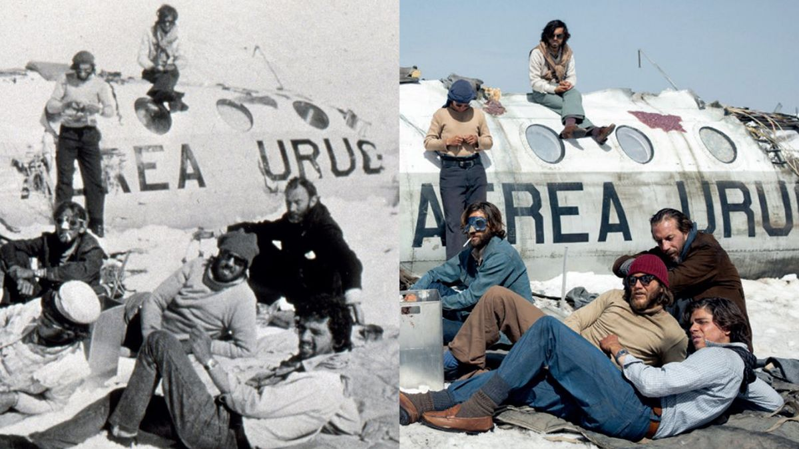

INTRODUCCIÓN
Esta página web esta dedicada a la pelicula "LA SOCIEDAD DE LA NIEVE", haciendo un breve enfasis en lo que esta increible pelicula quere llegar a transmitir, si lo vemos desde una perspectiva reflexiva, puede llegar adarnos gratas lecciones de vida...
REPARTO PRINCIPAL
Enzo Vogrincic |
Matías Recalt |
Agustín Pardella |

ANÁLISIS
-
Enfoque en la Supervivencia y el Grupo
- La película se distingue por su enfoque en el grupo de sobrevivientes y el instinto de supervivencia, en lugar de centrarse en las individualidades de cada personaje. Este enfoque coral puede ser interpretado como una crítica a la tendencia de las producciones contemporáneas hacia la serialidad y la individualización, optando por una narrativa que celebra la cooperación y la solidaridad.
-
Exploración Sensorial
- J.A. Bayona se aventura en un cine de los cuerpos, donde lo narrativo se desdibuja para alcanzar un saber que reside en lo físico. Esta exploración sensorial permite a la película capturar de manera elocuente la desesperación y el deseo de supervivencia, ofreciendo imágenes que pueden ser contempladas como obras de arte en sí mismas.
-
Trascendencia y Humanidad
- La película conduce a lo trascendental, explorando la posibilidad de un sentido afectivo y una humanidad trascendente. A través de sus personajes, Bayona plantea preguntas sobre el sinsentido de una existencia lastrada por la vulnerabilidad física y la posibilidad de un sentido más profundo y conectado.
-
Crítica a la Serialidad
- Aunque la película ha sido elogiada por su apuesta deliberadamente fílmica y su enfoque en la expresión personal, la decisión de mantener un enfoque coral puede desconcertar a algunos espectadores acostumbrados a la serialidad y la individualización en las producciones contemporáneas.
-
Comienza la
lucha por sobrevivir en la implacable
cordillera
- El inicio de su pesadilla el 13 de octubre de 1972
- Roberto estudiante de Medicina toma la iniciativa en ayudar a los heridos reponiendo una pierna dislocada en medio de la conmoción
- Evaluación de recursos y organización de tareas.
- "El ser humano está dispuesto a sufrir a condición de que sirva para algo".
- La primera noche con la temperatura cayendo 30 gr los sobrevivientes usan maletas para bloquear la entrada y tratar de conservar algo de calor
- Marcelo El capitán insta a todos a no dormirse para no congelarse pero a pesar de sus esfuerzos algunos no sobreviven la noche
-
Solidaridad y Liderazgo
- Importancia del trabajo en equipo y la solidaridad.
- Marcelo raciona la poca comida que encuentran asignando una galleta y una aceituna por persona
- Cambios en el liderazgo ante nuevas circunstancias. Nando se hace lider sin darse cuenta
- "El éxito se basa en la fuerza del equipo en su conjunto".
-
Dejan de buscarlos
- Escuchan por la radio que dejaron de buscarlos al dia 10
- Todos lloran desconsoladamente
- Para el mundo estaban muertos
-
Decisiones Difíciles
- Racionamiento de comida y desafíos éticos. Comienzan con la Apofagia
- Compromiso con la supervivencia y honor a los fallecidos.
- "La supervivencia es la razón".
-
Esperanza y Rescate
- Nando y Roberto caminan por 10 diaz hasta encotrar a un arrierro.
- Emoción y despedida del lugar de la tragedia con el rescate.
-
Lecciones Aprendidas
- Resiliencia, solidaridad y valentía en situaciones extremas.
- Importancia de la esperanza y la fe en momentos difíciles.
- "No hay amor mas grande que el que da la vida por sus amigos"Numa Turcaqui.
En resumen, "La Sociedad de la Nieve" ofrece una reflexión profunda sobre la supervivencia, la humanidad y la cooperación en situaciones extremas. A través de su enfoque en el grupo y su exploración sensorial, la película invita a los espectadores a reflexionar sobre la naturaleza de la existencia y la posibilidad de un sentido más profundo en medio de la adversidad.
TRAILER OFICIAL
REFLEXIONES
- Uno a uno empiezan a superar sus escrúpulos morales y se unen en el acto de supervivencia.
- El proceso de cómo emergen nuevas normas sociales dentro de un grupo o sociedad las normas sociales son reglas no escritas que emergen de la interacción entre los miembros de un grupo y que guían comportamientos actitudes y percepciones dentro de él estas normas son importantes porque hacen previsibles las acciones de los demás y así disminuyen la ambigüedad y facilitan el funcionamiento cohesivo del grupo cada sociedad crea su propio conjunto de normas basadas en valores y temas que considera relevantes Incluyendo los tabúes sociales que son prácticas vistas como inaceptables o aborrecibles sin embargo estas normas no son fijas cambian según con lo que el grupo considera importante
- Cuando el grupo opta por la pagia para sobrevivir aunque es un tabú cultural la extrema situación les esfuerza reevaluar esta Norma que ya no se ajusta a las necesidades del grupo donde la supervivencia es su máxima prioridad y esto nos demuestra que en tiempos de crisis tanto individuos como grupos pueden superar las limitaciones de sus culturas convencionales y adoptar acciones antes impensables.
- El liderazgo en un grupo puede cambiar drásticamente ante nuevas circunstancias especialmente en situaciones críticas.
- Las jerarquías existentes pueden perder su relevancia ante desafíos completamente nuevos y en estas circunstancias suelen destacarse como líderes aquellos individuos que logran comprender y manejar estas nuevas dinámicas siendo a menudo los más inesperados quienes emergen en estos roles.
- La forma de compartir valores, actitudes y objetivos comunes en la película el grupo inicialmente mostraba cohesión ya que muchos eran amigos y compañeros de rugby pero esta cohesión se intensifica a medida que enfrentan la tragedia juntos y reconocen su interdependencia para sobrevivir y es este objetivo compartido El que sirve como el principal vínculo que los une promoviendo una fuerte identificación colectiva los miembros comienzan a identificarse más con el colectivo que como individuos adoptan una mentalidad de nosotros.
- El desafío psicológico Monumental al contravenir sus creencias y valores fundamentales para aliviar este conflicto interno tenían que justificar de alguna forma sus acciones la supervivencia el amor en su forma más elevada reconoce que amar implica un esfuerzo activo por beneficiar a otros ver su potencial y elevarlos esta realización le brinda la paz para aceptar su destino encontrando consuelo y hasta felicidad en la idea de que su muerte beneficiaría la supervivencia de sus amigos.
- Especialmente los momentos más adversos en un mundo que a veces parece ensalzar en el individualismo no debemos olvidar que es juntos apoyándonos unos a otros como realmente podemos superar las adversidades y Cómo podemos hacer del mundo un lugar mejor para todos la sociedad de la nieve nos Recuerda que nuestro fundamento más íntimo Descansa en la necesidad que tenemos de cuidarnos unos a otros.
GALERIA
